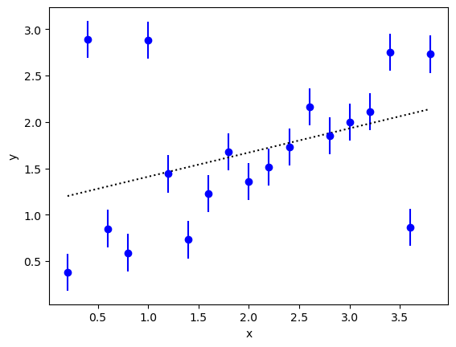

Case Study: Outliers and Bayesian Integrals¶
In this case study, we analyze a fit with outliers in the data that distort the least-squares solution. We show one approach to dealing with the outliers that requires using Bayesian integrals in place of least-squares fitting, to fit the data while also modeling the outliers.
This case study is adapted from an example by Jake Vanderplas on his Python blog.
The Problem¶
We want to extrapolate a set of data values y to x=0 fitting
a linear fit function (fitfcn(x,p)) to the data:
import matplotlib.pyplot as plt
import numpy as np
import gvar as gv
import lsqfit
def main():
# least-squares fit to the data
x = np.array([
0.2, 0.4, 0.6, 0.8, 1.,
1.2, 1.4, 1.6, 1.8, 2.,
2.2, 2.4, 2.6, 2.8, 3.,
3.2, 3.4, 3.6, 3.8
])
y = gv.gvar([
'0.38(20)', '2.89(20)', '0.85(20)', '0.59(20)', '2.88(20)',
'1.44(20)', '0.73(20)', '1.23(20)', '1.68(20)', '1.36(20)',
'1.51(20)', '1.73(20)', '2.16(20)', '1.85(20)', '2.00(20)',
'2.11(20)', '2.75(20)', '0.86(20)', '2.73(20)'
])
fit = lsqfit.nonlinear_fit(data=(x, y), prior=make_prior(), fcn=fitfcn)
print(fit)
# plot data
plt.errorbar(x, gv.mean(y), gv.sdev(y), fmt='o', c='b')
# plot fit function +- 1 sigma
xline = np.linspace(x[0], x[-1], 100)
yline = fitfcn(xline, fit.p)
plt.plot(xline, gv.mean(yline), 'k--')
yp = gv.mean(yline) + gv.sdev(yline)
ym = gv.mean(yline) - gv.sdev(yline)
plt.fill_between(xline,yp,ym,color='0.8')
plt.xlabel('x')
plt.ylabel('y')
plt.show()
def fitfcn(x, p):
c = p['c']
return c[0] + c[1] * x
def make_prior():
prior = gv.BufferDict(c=gv.gvar(['0(5)', '0(5)']))
return prior
if __name__ == '__main__':
main()
The fit is not good, with a chi**2 per degree of freedom that is
much larger than one, despite rather broad priors for the intercept and
slope:
Least Square Fit:
chi2/dof [dof] = 13 [19] Q = 1.2e-40 logGBF = -117.45
Parameters:
c 0 1.149 (95) [ 0.0 (5.0) ]
1 0.261 (42) [ 0.0 (5.0) ]
Settings:
svdcut/n = 1e-12/0 tol = (1e-08,1e-10*,1e-10) (itns/time = 4/0.1)
The problem is evident if we plot the data:
{kind=link}
At least three of the data points are outliers: they disagree with other
nearby points by several standard deviations. These outliers have a big
impact on the fit (dashed line, with the gray band showing the ±1-sigma
region). In particular they pull the x=0 intercept (fit.p['c'][0])
up above one, while the rest of the data suggest an intercept of 0.5
or less.
A Solution¶
There are many ad hoc prescriptions for handling outliers. In the best
of situations one would have an explanation for the outliers and seek
to model them accordingly. For example,
we might know that some fraction w of the time our detector
malfunctions, resulting in much larger measurement errors than usual.
This model can be represented by a more complicated probability
density function (PDF) for the data that consists of a linear combination
of the normal PDF with another PDF that is similar but with much larger
errors. The relative weights assigned to these two terms would be 1-w
and w, respectively.
A modified data prior of this sort is incompatible with the least-squares
code in lsqfit. Here we will incorporate it by replacing the
least-squares analysis with a Bayesian integral, where the normal PDF is
replaced a modified PDF of the sort described above.
The complete code for this analysis is
as follows:
import matplotlib.pyplot as plt
import numpy as np
import gvar as gv
import lsqfit
def main():
### 1) least-squares fit to the data
x = np.array([
0.2, 0.4, 0.6, 0.8, 1.,
1.2, 1.4, 1.6, 1.8, 2.,
2.2, 2.4, 2.6, 2.8, 3.,
3.2, 3.4, 3.6, 3.8
])
y = gv.gvar([
'0.38(20)', '2.89(20)', '0.85(20)', '0.59(20)', '2.88(20)',
'1.44(20)', '0.73(20)', '1.23(20)', '1.68(20)', '1.36(20)',
'1.51(20)', '1.73(20)', '2.16(20)', '1.85(20)', '2.00(20)',
'2.11(20)', '2.75(20)', '0.86(20)', '2.73(20)'
])
prior = make_prior()
fit = lsqfit.nonlinear_fit(data=(x, y), prior=prior, fcn=fitfcn, extend=True)
print(fit)
# plot data
plt.errorbar(x, gv.mean(y), gv.sdev(y), fmt='o', c='b')
# plot fit function
xline = np.linspace(x[0], x[-1], 100)
yline = fitfcn(xline, fit.p)
plt.plot(xline, gv.mean(yline), 'k:')
yp = gv.mean(yline) + gv.sdev(yline)
ym = gv.mean(yline) - gv.sdev(yline)
plt.fill_between(xline, yp, ym, color='0.8')
plt.xlabel('x')
plt.ylabel('y')
plt.savefig('case-outliers1.png', bbox_inches='tight')
# plt.show()
### 2) Bayesian integral with modified PDF
# modified probability density function
mod_pdf = ModifiedPDF(data=(x, y), fcn=fitfcn, prior=prior)
# integrator for expectation values with modified PDF
expval = lsqfit.BayesIntegrator(fit, pdf=mod_pdf)
# adapt integrator to pdf
expval(neval=1000, nitn=15)
# evaluate expectation value of g(p)
def g(p):
w = 0.5 + 0.5 * p['2w-1']
c = p['c']
return dict(w=[w, w**2], mean=c, outer=np.outer(c,c))
results = expval(g, neval=1000, nitn=15, adapt=False)
print(results.summary())
# parameters c[i]
mean = results['mean']
cov = results['outer'] - np.outer(mean, mean)
c = mean + gv.gvar(np.zeros(mean.shape), gv.mean(cov))
print('c =', c)
print(
'corr(c) =',
np.array2string(gv.evalcorr(c), prefix=10 * ' '),
'\n',
)
# parameter w
wmean, w2mean = results['w']
wsdev = gv.mean(results['w'][1] - wmean ** 2) ** 0.5
w = wmean + gv.gvar(np.zeros(np.shape(wmean)), wsdev)
print('w =', w)
# add new fit to plot
yline = fitfcn(xline, dict(c=c))
plt.plot(xline, gv.mean(yline), 'r--')
yp = gv.mean(yline) + gv.sdev(yline)
ym = gv.mean(yline) - gv.sdev(yline)
plt.fill_between(xline, yp, ym, color='r', alpha=0.2)
plt.show()
class ModifiedPDF:
""" Modified PDF to account for measurement failure. """
def __init__(self, data, fcn, prior):
self.x, self.y = data
self.fcn = fcn
self.prior = prior
def __call__(self, p):
w = 0.5 + 0.5 * p['2w-1']
y_fx = self.y - self.fcn(self.x, p)
data_pdf1 = self.gaussian_pdf(y_fx, 1.)
data_pdf2 = self.gaussian_pdf(y_fx, 10.)
prior_pdf = self.gaussian_pdf(
p.buf[:len(self.prior.buf)] - self.prior.buf
)
return np.prod((1. - w) * data_pdf1 + w * data_pdf2) * np.prod(prior_pdf)
@staticmethod
def gaussian_pdf(x, f=1.):
xmean = gv.mean(x)
xvar = gv.var(x) * f ** 2
return gv.exp(-xmean ** 2 / 2. /xvar) / gv.sqrt(2 * np.pi * xvar)
def fitfcn(x, p):
c = p['c']
return c[0] + c[1] * x
def make_prior():
prior = gv.BufferDict(c=gv.gvar(['0(5)', '0(5)']))
prior['erfinv(2w-1)'] = gv.gvar('0(1)') / 2 ** 0.5
return prior
if __name__ == '__main__':
main()
Here class ModifiedPDF implements the modified PDF. As usual the PDF for
the parameters (in __call__) is the product of a PDF for the data times a
PDF for the priors. The data PDF is more complicated than usual, however, as
it consists of two Gaussian distributions: one, data_pdf1, with the
nominal data errors, and the other, data_pdf2, with errors that are ten
times larger. Parameter w determines the relative weight of each data PDF.
The Bayesian integrals are estimated using lsqfit.BayesIntegrator
expval, which is created from the least-squares fit output (fit).
It is used to evaluate expectation values of arbitrary functions of the
fit variables. Normally it would use the standard PDF from the least-squares
fit, but we replace that PDF here with an instance (mod_pdf) of class
ModifiedPDF.
We have modified make_prior() to introduce 2w-1 as a new fit
parameter. The inverse error function of this parameter has a Gaussian prior
(0±1)/sqrt(2), which makes 2w-1 uniformly distributed across the interval
from -1 to 1 (and therefore w uniformly distributed between 0 and 1). This
parameter has no role in the initial least-squares fit.
We first call expval with no function, to allow the integrator to adapt
to the modified PDF. We then use the integrator, now with adaptation
turned off (adapt=False), to evaluate the expectation value of
function g(p). The output dictionary results
contains expectation values of the corresponding entries in the dictionary
returned g(p). These data allow us to calculate means, standard deviations
and correlation matrices for the fit parameters.
The results from this code are as follows:
Least Square Fit:
chi2/dof [dof] = 13 [19] Q = 1.2e-40 logGBF = -117.45
Parameters:
c 0 1.149 (95) [ 0.0 (5.0) ]
1 0.261 (42) [ 0.0 (5.0) ]
erfinv(2w-1) -2e-16 +- 0.71 [ 0.00 (71) ]
-----------------------------------------------------
2w-1 -2e-16 +- 0.8 [ 0.00 (80) ]
Settings:
svdcut/n = 1e-12/0 tol = (1e-08,1e-10*,1e-10) (itns/time = 4/0.0)
itn integral average chi2/dof Q
-------------------------------------------------------
1 6.82(11)e-11 6.82(11)e-11 0.00 1.00
2 7.04(11)e-11 6.930(78)e-11 1.10 0.36
3 6.775(76)e-11 6.878(58)e-11 0.97 0.49
4 6.651(97)e-11 6.821(50)e-11 1.04 0.40
5 6.74(10)e-11 6.806(45)e-11 0.95 0.55
6 6.740(79)e-11 6.795(39)e-11 0.88 0.69
7 6.763(87)e-11 6.790(36)e-11 0.93 0.63
8 7.085(92)e-11 6.827(34)e-11 0.96 0.56
9 6.873(68)e-11 6.832(31)e-11 0.95 0.59
10 6.853(75)e-11 6.834(29)e-11 0.95 0.61
11 6.79(11)e-11 6.830(28)e-11 0.89 0.76
12 6.833(94)e-11 6.830(27)e-11 0.92 0.71
13 6.806(81)e-11 6.828(26)e-11 0.93 0.67
14 6.67(10)e-11 6.817(25)e-11 0.94 0.66
15 6.725(93)e-11 6.811(24)e-11 0.90 0.77
c = [0.28(14) 0.622(58)]
corr(c) = [[ 1. -0.90056919]
[-0.90056919 1. ]]
w = 0.26(11)
logBF = -23.4099(35)
The table after the fit shows results for the normalization of the
modified PDF from each of the nitn=15 iterations of the vegas
algorithm used to estimate the integrals. The logarithm of the normalization
(logBF) is -23.4, which is much larger than the value -117.5 of logGBF
from the least-squares fit. This means that the data much prefer the
modified prior (by a factor of exp(-23.4 + 117.4) or about 1041.).
The new fit parameters are much more reasonable. In particular the intercept is 0.28(14) rather than the 1.15(10) from the least-squares fit. This is much better suited to the data (see the dashed line in red):
{kind=link}
Note, from the correlation matrix, that the intercept and slope are
anti-correlated, as one might guess for this fit.
The analysis also gives us an estimate for the failure rate w=0.26(11)
of our detectors — they fail about a quarter of the time.
A Variation¶
Vanderplas in his version of this problem assigns a separate w to
each data point. This is a slightly different model for the failure that
leads to outliers. It is easily implemented here by changing the prior
so that 2w-1 (and its inverse error function) is an array:
def make_prior():
prior = gv.BufferDict(c=gv.gvar(['0(5)', '0(5)']))
prior['erfinv(2w-1)'] = gv.gvar(19 * ['0(1)']) / 2 ** 0.5
return prior
The Bayesian integral then has 21 parameters, rather than the 3 parameters before. The code still takes only 5–6 secs to run (on a 2014 laptop).
The final results are quite similar to the other model:
c = [0.30(16) 0.609(68)]
corr(c) = [[ 1. -0.90919302]
[-0.90919302 1. ]]
w = [0.37(25) 0.67(23) 0.40(27) 0.35(27) 0.65(24) 0.49(30) 0.50(29) 0.35(25)
0.44(27) 0.41(27) 0.37(26) 0.37(26) 0.41(27) 0.37(25) 0.38(26) 0.38(25)
0.49(29) 0.65(25) 0.38(27)]
logBF = -24.164(63)
Note that the logarithm of the Bayes Factor logBF is slighly lower for
this model than before. It is also less accurately determined (20x), because
21-parameter integrals are considerably more difficult than 3-parameter
integrals. More precision can be obtained by increasing neval, but
the current precision is more than adequate.
Only three of the w[i] values listed in the output are more than two
standard deviations away from zero. Not surprisingly, these correspond to
the unambiguous outliers.
The outliers in this case are pretty obvious; one is tempted to simply drop
them. It is clearly better, however, to understand why they have occurred and
to quantify the effect if possible, as above. Dropping outliers would be much
more difficult if they were, say, three times closer to the rest of the data.
The least-squares fit would still be poor (chi**2 per degree of freedom of
3) and its intercept a bit too high (0.6(1)). Using the modified PDF, on the
other hand, would give results very similar to what we obtained above: for
example, the intercept would be 0.35(17).